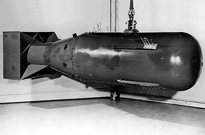

Макет бомбы «Малыш», сброшенной на Хиросиму

Малыш (англ. Little Boy, дословно «маленький мальчик»)
кодовое название атомной (урановой) бомбы, разработанной в рамках Манхэттенского проекта. Первая удачно взорванная урановая бомба и первая в истории применённая в бою атомная бомба: 6 августа 1945 года она была сброшена американским бомбардировщиком «Enola Gay» на японский город Хиросима.
Конструкция
Бомба длиной 3 метра и диаметром 71 сантиметр весила 4,4 тонны. Уран для её начинки был добыт в Бельгийском Конго (ныне Демократическая Республика Конго), в Канаде (Большое Медвежье озеро) и в США (штат Колорадо).
В отличие от большинства современных бомб, сделанных по имплозивному принципу, «Малыш» был бомбой пушечного типа — простой в расчёте и изготовлении, а главное — отказоустойчивой (по этой причине точные чертежи бомбы до сих пор засекречены). За это пришлось заплатить низким КПД.
Ядерное топливо обладает критической массой: докритическое количество урана просто радиоактивно, сверхкритическое — вызывает цепную ядерную реакцию, сопровождающуюся взрывом. Цепная реакция в топливе критической массы может начаться самопроизвольно, но в «Малыше» использовался поток нейтронов, который и вызывал первоначальное деление ядер. При делении ядра сами испускают нейтроны, вызывающие новый «виток» реакции. При слабом потоке нейтронов и плохой «герметизации» масса быстро падает ниже критической, и цепная реакция прекращается. Необходимо быстро довести топливо до сверхкритического состояния и как можно дольше удержать его в этом состоянии, не дав разлететься раньше времени. В «Малыше» эта задача была решена следующим образом: основной деталью бомбы был обрезанный ствол флотской пушки, на дульном конце которого находились мишень в виде уранового цилиндра и бериллий-полониевый инициатор, а в казённой части ствола — кордитный порох и снаряд из карбида вольфрама, к головной части которого была прикреплена труба из урана. Выстрел из такой «пушки» с большой скоростью «надевал» эту трубу на цилиндр, доводя массу делящегося вещества до сверхкритической. Одновременно инициатор сжимался, поток нейтронов от него многократно увеличивался, вызывая ядерный взрыв; прочность ствола и давление пороховых газов некоторое время сдерживали урановые части от разлёта.
Бомба содержала 64 килограмма чрезвычайно дорогого высокообогащённого урана, из них около 700 граммов (или чуть более 1 %) непосредственно участвовало в цепной ядерной реакции. Дефект массы в ходе ядерной реакции составил около 600 миллиграммов, то есть по формуле Эйнштейна {\displaystyle E=mc^{2}}E=mc^{2} 600 миллиграммов массы превратились в энергию, эквивалентную энергии взрыва от 13 до 18 тысяч (по разным оценкам) тонн тротила.
Был использован укороченный до 1,8 м ствол морского орудия калибра 16,4 см (6,5"), при этом урановая «мишень» представляла собой цилиндр диаметром 100 мм и массой 25,6 кг, на который при «выстреле» надвигался цилиндрический «снаряд» массой 38,5 кг с соответствующим внутренним каналом. Такая неочевидная конструкция служила для снижения нейтронного фона мишени: в нём она находилась не вплотную, а на расстоянии 59 мм от нейтронного отражателя («тампера»). В свою очередь, «снаряд» содержал более одной критической массы урана — но избегал цепной реакции за счёт разнесённых кольцевых стенок и отсутствия вплоть до выстрела отражателей со всех сторон, кроме донышка. В результате риск преждевременного начала цепной реакции деления с неполным энерговыделением снижался до нескольких процентов.
Несмотря на низкий коэффициент полезного действия, радиоактивное загрязнение от взрыва было невелико, так как взрыв был произведён в 600 м над землёй, а сам непрореагировавший уран является слаборадиоактивным по сравнению с продуктами ядерной реакции. Взрыватели в бомбу вставлялись непосредственно в бомбоотсеке самолёта через 15 минут после взлёта, чтобы свести до минимума опасность последствий неудачного взлёта. При этом существовала вероятность, что бомба может сработать нештатно.© Солодкий Д.В.